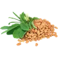

Plant Grimoire

FenugreekFenugreek (Trigonella foenum-graecum) is an aromatic annual whose hard, cuboid seeds are famed for money-drawing work.
Magickal Properties
Planet: Mercury
Deity: Apollo
Powers: Money
Magickal Uses
For steady money: Add a few fenugreek seeds to mop water or a fenugreek infusion and wash floors to draw money into the household.
Jar working: Half‑fill a small jar with fenugreek and leave it open in the house to attract money. Every couple of days add a few seeds until the jar is full, then empty it out, return the herb to the ground, and begin again.
Safety notes: Seeds are not recommended for internal use if pregnant.
Magickal Teas
Fenugreek seed can be brewed as a magickal tea to attract money and enhance skill in verbal communication. Drink 1 to 2 cups only during the spell event itself.